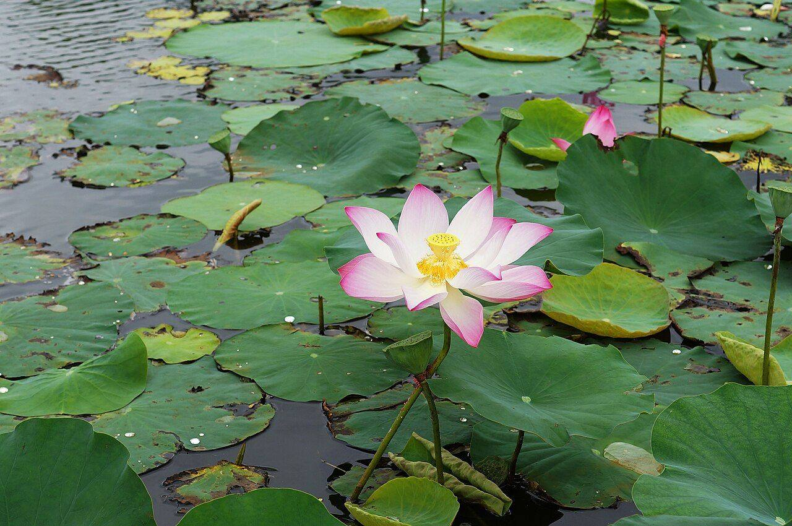
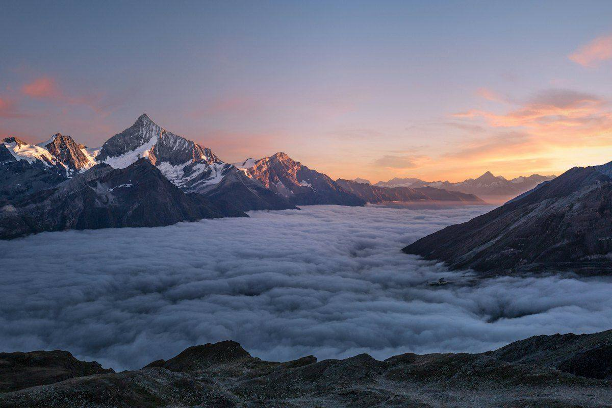

Goodwill
Our organization is built upon kind gestures of peace and goodwill, like a Peace Dove carrying an olive branch to all members of our beloved global family.
 PEACECHAMPION
PEACECHAMPIONOur mission is to support the evolution of human values, consciousness and capacities by strengthening global peace awareness and offering fun platforms for practicing peace together through art, culture, films, movement, technology, education and rewarding service to the greater good.
Vote yes for peaceStrategy
Tipping point theory states that a new behavior must be adopted by 15-25% of the overall group before it spreads across the entire population and brings systemic change. According to this calculation then, if we get ONE BILLION people to vote for peace and then practice peace, we have passed the crucial threshold for this uplifting behavior to spread to the 8 billion plus members of our human family. It all starts with voting YES for peace and downloading our free Peace Champion app and its life-changing catalog of wisdom and peace practices. This is how we raise the collective vibration of humankind for the benefit of all living beings, one Peace Champion at a time.
This inspiring initial exchange establishes our foundation's kind and supportive relationship with the world. We want to build trust and goodwill and restore faith in humanity by gifting our global family powerful, empirically proven tools for creating inner peace and Global Peace. When this positive experience is shared with others and promoted at scale, this wise act of voting for peace grows into a joyful global movement that is easily amplified by conscious collaborators across every segment of society.
Imagine the power and reach of our Peace Champion platform after just 1 million verified votes for peace have been counted. Then imagine 10 million votes. Then 100 million. Then ONE BILLION. As the transformational campaign spreads across the planet, this creates an immense, cross-border constituency that unites and engages peace-loving people everywhere. As a result, the collective vibration of humankind rises, radiating peace, love, and harmony throughout Planet Earth and to all the miraculous living beings who share this magnificent paradise.
To deepen the impact of this momentous movement and ground it firmly in the world, a Peace Tree will be planted for every vote. This will be another beneficial category of Peace Champion peace fractals - ONE BILLION trees planted to help humankind make peace with Planet Earth.
The path to the tipping point
A Peace Tree will be planted for every vote — ONE BILLION trees to help humankind make peace with Planet Earth.
Vision
Peace Champion is a modern cultural and technological movement to help human beings across our globe embody peace and make peace a daily practice. This 50-year project (2025-2075) envisions a unified, compassionate and thriving world in which peace is the operating principle for individuals, communities, organizations and nations.
This co-created world will be founded on kindness, harmony and order across the inner, interpersonal, international and environmental levels. Our ultimate goal is to help bring forth a sustainable human renaissance and a lasting golden age of nonviolence for humankind.
As a California 501c3 nonprofit organization founded in 2013, our seminal program is for ONE BILLION people from every country and culture across the earth to cast a verified vote YES in support of our Declaration for Global Peace. This historic Declaration fully integrates and supports The Muscles of Peace Global Resolution in Support of Infrastructures for Peace in Governments Worldwide, a global peace campaign widely endorsed by Global Citizen Signatories from 192 nations and peacebuilding experts, civil society organizations, youth, key political figures, community leaders, and academia.
A huge step forward for this movement and for humankind was achieved in 2023 when the UN's “A New Agenda for Peace” under “Preventing Conflict and Violence and Sustaining Peace,” made the official recommendation to all member states to “develop national prevention strategies and strengthen national infrastructures for peace.”

The most rewarding journey in all of life is traveling from separation to unity.
In unity, we all get to come home to peace.
Our best work on earth, therefore, is to use wisdom and peace practices to rise above the limited, separation-based body consciousness of the lower mind and ascend to the higher mind and the blissful awakening of unity consciousness.
When we arrive at the enlightened state where we experience that we are united with all that is on a deeper level than the physical senses can perceive, we have connected with the unifying source energy from which the material universe arises.
Tapped into this vast network of creation and vibrating at its universal frequency, we become more powerful and can have a bigger positive impact in the world.
When we use this gift to serve others in the compassionate Bodhisattva tradition, we are filled with the golden energy of selfless love, the strongest force for good in the universe, and are uplifted to higher states of consciousness along with those we serve.
Rising together as one, we elevate the collective vibration of humankind for the benefit of all living beings.
What we believe
Leadership
Board Chair, Chief Visionary Officer, Lead Content Creator
John is a peacebuilder, author, filmmaker, composer, and branding specialist.
Read bioBoard Member, Chief Fundraiser
Elizabeth Riley is the rare amalgam of writer, producer, designer, filmmaker and futurist.
Read bioBoard Advisor
Iman Ibrahim is an adventurous soul with a passion for wisdom, beauty, peace, evolution and deep connections.
Read bioExecutive Director, Board member
Fifer Garbesi is an award-winning emerging formats and technologies producer.
Read bioBoard Member
George is on the Board of the Buckminster Fuller Institute.
Read bioOlympian
Olympian Marilyn King's genius reaches far beyond sports.
Read bioPeace Champion Artivist-At-Large
Aaron Ableman is a United Nations award-winning multimedia storyteller, artist/rapper, and impact producer.
Read bioFilm Producer
Gavin J. Behrman is a seasoned film and television producer and production manager.
Read bioMusic Composer & Producer
Greg is a songwriter, arranger, composer, orchestrator and producer of film and television music.
Read bio